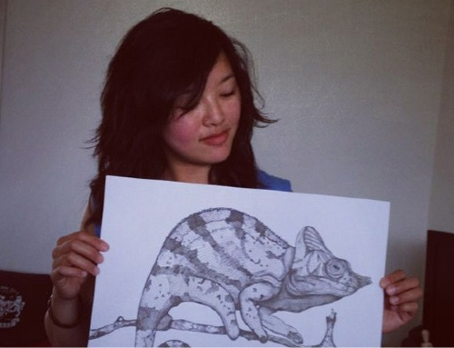

She is an Amsterdam based artist born in 1984; her style is rather unique, she defines art in less abstract way ~ with an intriguing style ~ that combines both left and right hemisphere part of the brain. Graduated in 2010 in Communication and Multimedia Design, she later decided to pursue her childhood dream to be an artist instead.
Amazed by her works, I approached her in person for an interview session. Below is an article I wrote as a result of chilling together on her couch, for a little over fifty minutes, at her cozy apartment in Amsterdam.

Fig 1: Holding "Chameleon"
~ Sunday afternoon, mid June 2012 ~
She is an Amsterdam based artist born in 1984; her style is rather unique, she defines art in less abstract way ~ with an intriguing style ~ that combines both left and right hemisphere part of the brain. Graduated in 2010 in Communication and Multimedia Design, she later decided to pursue her childhood dream to be an artist instead.
Amazed by her works, I approached her in person for an interview session. Below is an article I wrote as a result of chilling together on her couch, for a little over fifty minutes, at her cozy apartment in Amsterdam.